RESEARCH / SOLANKI LAB
From genes to
crop resilience.
Integrated research components in the lab connect plant immunity, pathogen biology, functional genomics, and soil microbial solutions to achieve integrative plant health in agricultural systems.
01 / SOYBEAN HOST–PATHOSYSTEM
Soybean Disease Resistance Loci
We investigate the genetic basis of soybean disease resistance by connecting variation across soybean germplasm with disease phenotypes. Soilborne diseases such as white mold and Fusarium diseases are a primary focus, while Cercospora and other foliar diseases are also being explored. Genetic mapping and comparative analyses help prioritize genomic regions and candidate genes for functional evaluation.
Questions we ask
- Which genomic regions are associated with disease resistance?
- How can genetic variation guide the selection and validation of resistant germplasm?
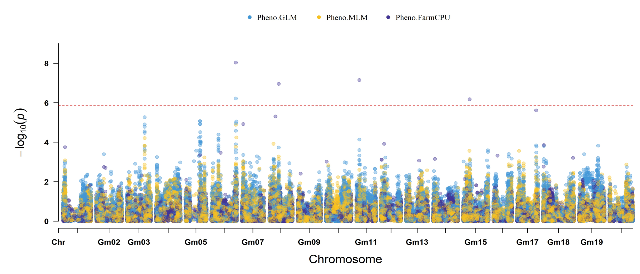
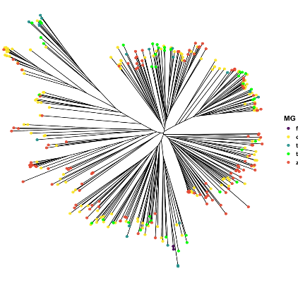
02 / PATHOGEN BIOLOGY
Pathogen Genomics and Effector Identification
Field surveillance, pathogen characterization, and genome analysis connect disease pressure with pathogen diversity. We use these complementary perspectives to identify candidate effectors and investigate their roles in plant–pathogen interactions. We are also exploring dsRNA/RNAi-based approaches as targeted tools for next-generation plant disease management.
Questions we ask
- How does pathogen diversity relate to disease observed in the field?
- Which candidate effectors contribute to interactions with the host?
- How can next-generation pathogen-control strategies be further optimized and made accessible for practical disease management?
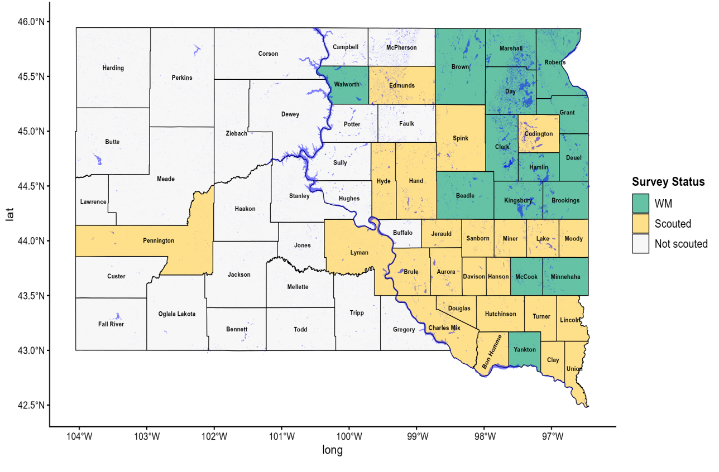
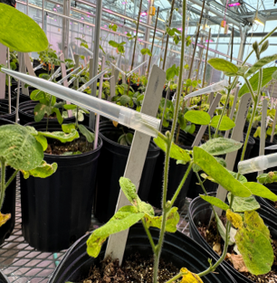
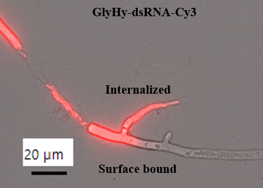
03 / NLR REGULATION IN PLANTS
NLR Temperature Sensitivity in Small Grains
We study how temperature influences the function of NLR immune receptors in cereal crops. Connecting environmental conditions with resistance phenotypes helps us investigate why immune protection is maintained or weakened across temperature regimes. AI-guided prediction and modeling of temperature-sensitive motifs can help identify structural features associated with temperature-dependent immune function and guide experimentally testable changes in receptor structure.
Questions we ask
- How does temperature change NLR-mediated immunity?
- Which molecular features support resistance under changing temperatures?
- How can protein modeling guide testable designs for temperature-adapted immunity?
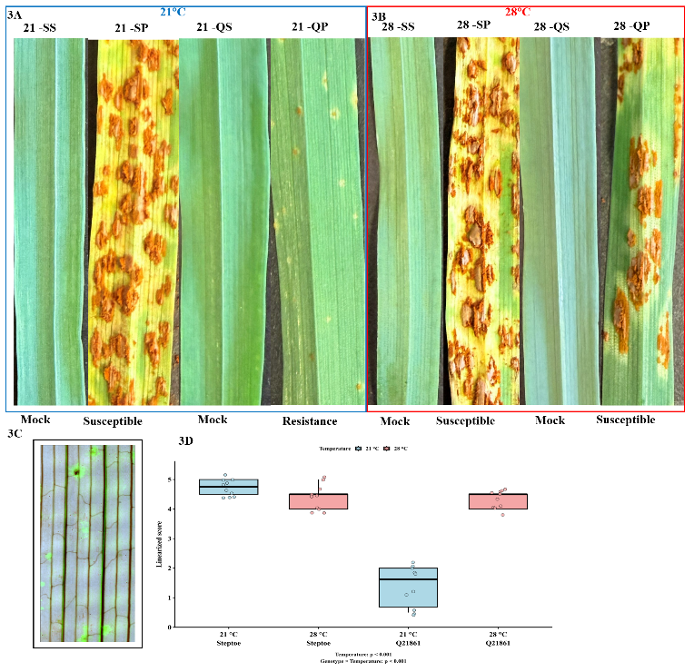
04 / NLR DOMAIN EVOLUTION
NLR Domain Evolution in Grasses and Legumes
We examine how immune receptor domains evolve across grasses and legumes and how that diversity relates to function.
Questions we ask
- How has domain diversity shaped immune receptor function?
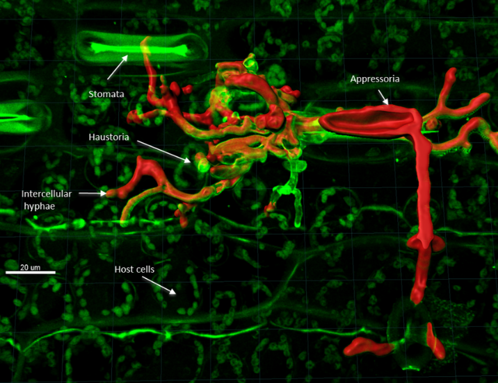
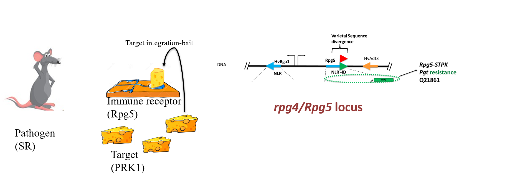
05 / FUNCTIONAL & SPATIAL GENOMICS
Spatial Regulation of Plant Resistance Expression Circuit
Resistance responses unfold in particular tissues and at particular times. We integrate tissue imaging and spatial transcriptomics to connect gene expression with biological context and identify expression patterns for functional investigation.
Questions we ask
- Where are resistance-associated expression programs active?
- How do tissue organization and gene expression change during plant–pathogen interaction?
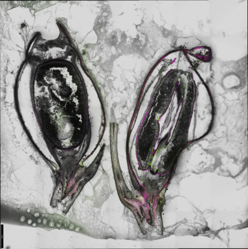
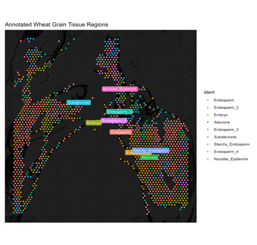
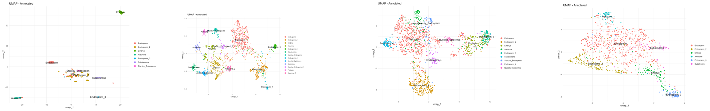
06 / SOIL MICROBIOME & BIOPRODUCTS
Soil Microbial Genomics
We investigate soil microbial composition and genomic potential to understand how communities relate to plant health. Sequencing and functional analysis help connect microbial diversity with nutrient use and disease suppression.
Questions we ask
- Which microbial communities and functions are associated with plant health?
- How can genomic information guide the selection of beneficial microorganisms?
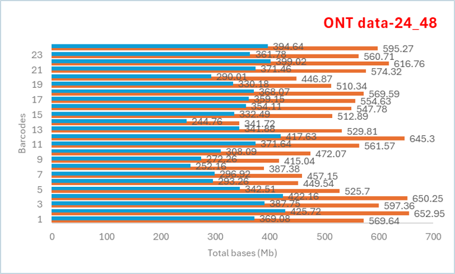
07 / CORN · SOYBEAN · WHEAT
Biostimulants and Biocontrol
We evaluate beneficial microorganisms and their products for applications in crop health. Laboratory assays, plant experiments, and local industry partnerships help develop and assess formulations aligned with farmer needs.
Questions we ask
- Which locally adapted microorganisms show beneficial activity?
- How can promising biological activity translate into practical crop health formulations?